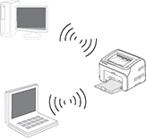
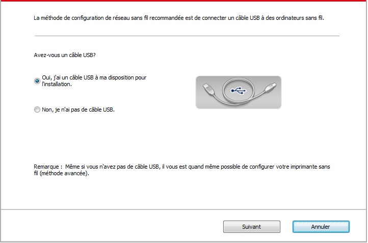
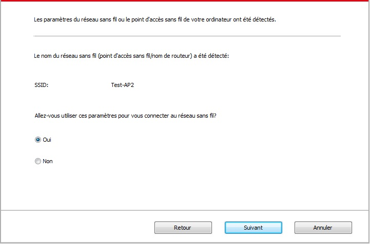
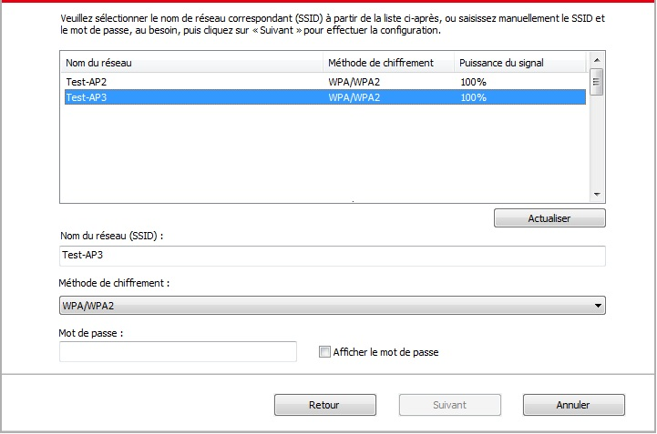
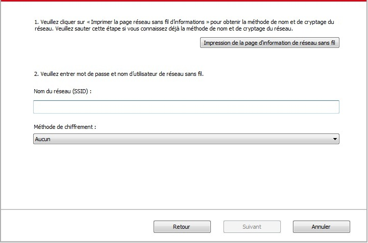
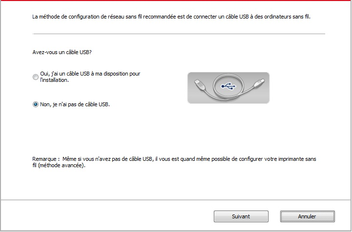
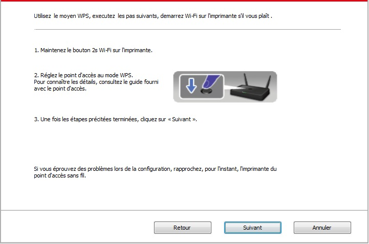
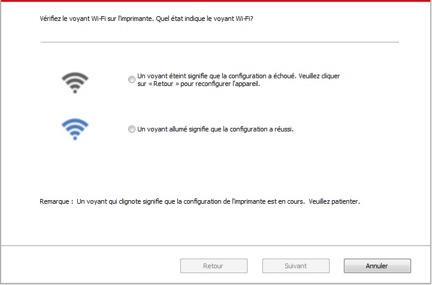

5.Configuration de réseau sans fil (adéquat pour le modèle avec Wi-Fi)
Selon le modèle, le modèle d’impression avec une connexion Wi-Fi d’impression fonction connexion réseau sans fil prend en charge deux types de structure fondamentale à savoir connexion type et Soft-AP. En général, qu’une seule connexion doit exister entre l’ordinateur et imprimer à la fois. Si vous avez un problème dans le processus de configuration de réseau sans fil, s’il vous plaît voir chapitre 5.3 pour les problèmes courants dans les paramètres du réseau sans fil.
 |
Mode de structure de base: connecter l'équipement sans fil par le routeur 1. Point de connexion (routeur sans fil) 2. Imprimante de réseau sans fil 3. Connecter l'ordinateur du point de connexion par le réseau sans fil 4. Connecter à l'ordinateur du point de connexion par le réseau câblé |
|
 |
Soft-AP L'ordinateur avec connexion sans fil est directement connecté au périphérique sans fil. |
5.1.Mode de structure de base
Vous pouvez connecter l'ordinateur et l'imprimante par le point de connexion (routeur sans fil). Le point de connexion (routeur sans fil) est dividé en outil de configuration de réseau sans fil et configuration Wi-Fi Protected Setup (WPS).
Important: avant d'installer le réseau sans fil, il faut connaître le nom de réseau (SSID) et le mot de passe de point de connexion (routeur sans fil), utilisez en cas de configuration de réseau sans fil. Si vous n'êtes pas sûr, veuillez consulter votre administrateur de réseau ou le fabricant de point de connexion (routeur sans fil).
5.1.1.Outil de configuration de réseau sans fil
Si votre ordinateur a déjà installé de pilote et connecte au réseau sans fil, mais le réseau sans fil n"a pas changé, vous pouvez reconfigurer par l"outil de configuration de réseau sans fil.
5.1.1.1.Travail préparatoire
1. Point de connexion (routeur sans fil).
2. Ordinateur déjà connecté au réseau.
3. Imprimante avec la fonction de réseau sans fil.
5.1.1.2.Méthode de configuration d"outil de réseau sans fil
1. Sortir l"outil de configuration de réseau sans fil dans l"ordinateur.
1) Dans le système Windows: cliquez sur le menu "Commencer"－"Tous les programmes"－"Pantum"－Description de produit－"Outil de configuration de réseau sans fil" de l"ordinateur.
2) Système Mac: cliquez sur la rubrique de menu Finder d"ordinateur "Aller" - "Applications" - "Pantum" - "Service" - "Outil de configuration du réseau sans fil".
2. Utiliser la configuration de connexion de câble USB. Dans l"interface suivante, sélectionner "Oui, j"ai un câble USB pour installer". Cliquer sur "Suivant".

2.1 L"ordinateur est déjà connecté au Wi-Fi.
1) L"outil de configuration Wi-Fi sélectionne par défaut Wi-Fi connecté par l"ordinateur actuel, compléter la configuration suivant l"indication de l"interface.

 |
Remarque: |
• Le nom de réseau (SSID) que vous sélectionnez doit être identique avec celui de réseau (SSID) du point de connexion (routeur sans fil) de l"ordinateur. |
2) Veuillez crocher "Non" pour configurer des autres Wi-Fi si il est nécessaire de connecter des autres Wi-Fi, compléter la configuration suivant l"indication de l"interface.

|
Remarque: |
• Pour le moment, l"imprimante est compatible avec trois modes de sécurité: aucun, WEP et WPA/WPA2. 1) Aucun: sans utiliser aucun mode d"encodage. 2) WEP: Par utiliser WEP (wired equivalent privacy), envoyer et recevoir des données par la clé de sécurité. La clé WEP est adéquate pour le réseau encodé de 64 et 128 chiffres, y compris les chiffres et les lettres. 3) WPA/WPA2: Est une clé prépartagée de connexion de protection Wi-Fi, elle encode la connexion d"équipement sans fil et le point de connexion par TKIP ou AES (WPS - Personal). La longueur d"utilisation de WPA/WPA2 est une clé prépartagée (PSK) entre 8 à 63 chiffres. • Mot de passe affiché par défaut non croché, si croché, le mot de passe va s"afficher. |
2.2 L"ordinateur n"est pas connecté au Wi-Fi. Dans l"interface suivante, entrer le nom de réseau SSID (sans différentier capital et minuscule) de point de connexion (routeur de Wi-Fi) et le mot de passe, compléter la configuration suivant l"indication de l"interface.

|
Remarque: |
• Si vous ne connaissez pas le nom de réseau (SSID) du point de connexion (routeur sans fil), cliquez sur "Imprimer Page d"informations réseau sans fil" pour voir le nom de réseau (SSID) du point de connexion (routeur sans fil) à connecter. • Après la configuration de réseau sans fil, si l"imprimante ne peut être utilisée normalement, veuillez installer à nouveau la pilote. |
3. Utiliser la connexion WPS.
Dans l"interface suivante, sélectionner "non, je n"ai pas de câble USB". Cliquer sur "Suivant".

1) Utilisez le moyen WPS, executez les pas suivants, demarrez Wi-Fi sur l'imprimante s'il vous plaît . (Configuration concrète de WPS, veuillez référencer au chapitre 5.1.2).

2) Voir si l"imprimante est bien connectée ou pas selon l"état de lampe indicatrice de Wi-Fi sur l"imprimatne. Si la configuration échoue, cliquer sur "Précédent", et refaire la configuration; si la configuration réussit, cliquer sur le bouton "compléter", pour compléter la configuration.

|
Remarque: |
• Après la configuration de réseau sans fil, si l"imprimante ne peut être utilisée normalement, veuillez installer à nouveau la pilote. |
5.1.2.Configuration Wi-Fi Protected Setup (WPS)
Si le point de connexion (routeur sans fil) est compatible avec Wi-Fi Protected Setup (WPS), alors appuyez respectivement les touches Wi-Fi de panneau de contrôle d'imprimante et la touche WPS de point de connexion (routeur sans fil), pour connecter l'imprimante au réseau sans fil.
5.1.2.1.Travail préparatoire
1. Le point de connexion (routeur sans fil) est compatible avec Wi-Fi Protected Setup (WPS).
2. Imprimante avec la fonction de réseau sans fil.
5.1.2.2.Méthode de configuration Wi-Fi Protected Setup (WPS)
1. Ouvrez l'alimentation d'imprimante et du point de connexion (routeur sans fil).
2. Assurez que l'imprimante est en état prêt.
|
Remarque: |
• Si l'imprimante entre en état de veille, appuyez sur n'importe quelle touche de panneau de contrôle pour réveiller l'imprimante. |
3. Appuyez sur la touche 'Wi-Fi' de panneau de contrôle d'imprimante pour plus de 2 secondes, jusqu'à ce que la lampe bleu Wi-Fi d'imprimante clignote, puis relâchez.
4. Appuyez sur la touche WPS dans 2 minutes de point de connexion (routeur sans fil) puis relâchez.
5. Le point de connexion (routeur sans fil) et l'imprimante commencent la connexion de réseau sans fil, la lampe bleu Wi-Fi d'imprimante clignote. Après la connexion réussie, la lampe bleu Wi-Fi d'imprimante s'allume toujours.
Si la connexion n'est pas faite pour plus de 2 minutes, l'imprimante retoure en état prêt, la lampe Wi-Fi s'éteint, et la connexion Wi-Fi Protected Setup (WPS) échoue. En cas de reconnecter de nouveau, veuillez répéter les étapes 3-4 ci-dessus.
|
Remarque: |
• Après la connexion réussie Wi-Fi Protected Setup (WPS), si vous voulez imprimer par le mode de réseau sans fil, veuillez installer la pilote. |
5.1.3.Comment fermer Wi-Fi déjà connecté
Connecter Wi-Fi selon les étapes ci-dessus pour compléter le mode de structure de base, la lampe Wi-Fi déjà connectée au panneau de contrôle en état de connexion s'allume en permanence , dès lors appuyez sur ce boutou pour plus de 2 secondes puis coupez la connexion Wi-Fi (la lampe Wi-Fi va s'éteindre ).
5.2.Mode "hot spot" Wi-Fi
Vous pouvez (sans fil itinéraire) pour former une connexion entre l’ordinateur sans fil avec le fonction et imprimante de réseau sans fil réseau sans utiliser de point d’accès.
5.2.1.Travail préparatoire
1. Imprimante avec fonction Wi-Fi hot spot.
2. Ordinateur avec la fonction de réseau sans fil.
5.2.2. Connexion au Hotspot Wi-Fi
Activez Wi-Fi-Hotspot de l'imprimante avant de connecter le hotspot de l'imprimante. Pour cela, connectez au serveur Web intégré, cliquez sur "Réglage" - "Réglage Sans fil" - "Hotspot Sans fil" pour définir l'état de base du hotspot comme "Activé".
5.2.3. Configuration du hot spot Wi-Fi
Lorsque le point d’accès sans fil de l’imprimante est actif, l’utilisateur peut s’y connecter directement en effectuant une recherche. Le point d’accès est activé par défaut. Le mot de passe par défaut est « 12345678 ». Le SSID et le mot de passe de l’imprimante peuvent être obtenus dans la page des informations de configuration Wi-Fi, qui peut être imprimée en sélectionnant Imp Conf Wi-Fi. Une fois la connexion établie, la configuration peut être effectuée en fonction de la méthode de configuration Web.
5.3.FAQs dans la configuration de réseau sans fil
1. L'imprimante n'est pas trouvée
• L'alimentation de l'ordinateur, du point de connexion (routeur sans fil) ou de l'imprimante est déjà en marche.
• Si le fil USB est déjà connecté entre l'ordinateur et l'imprimante.
• L'imprimante est compatible avec la connexion de réseau sans fil ou pas.
2. En cas de connecter le réseau, le nom de réseau (SSID) ne peut être trouvé
• Vérifiez si l'interrupteur d'alimentation de point de connexion (routeur sans fil) est mis en marche.
• L'imprimante ne trouve pas le nom de réseau (SSID) du point de connexion (routeur sans fil) à connecter, veuillez vérifier le nom de réseau (SSID) du point de connexion et puis réessayez la connexion.
• Lorsque la configuration de point de connexion (routeur sans fil), vous devez reconfigurer le réseau sans fil d'imprimante.
3. Connexion échouée
• Veuillez vérifier si le point de connexion (routeur sans fil) et le mode de sécurité d'imprimante et le mot de passe sont correct.
• Vérifiez la réception d'antenne autour d'imprimante. Si le routeur est loin d'imprimante ou il y a obstacle entre les deux, ceci pourrait affecter la réception de signal.
• Fermez l'alimentation du point de connexion (routeur sans fil) et l'imprimante, redémarrez puis configurez.
4. Si un problème rencontre en cas d'utiliser l'imprimante dans le réseau, veuillez vérifier les suivants:
• Vérifiez si le logiciel Firewall bloque la communication. Si l'ordinateur et l'imprimante sont connectées au même réseau, mais ceci ne peut être trouvé, cela est possible que le logiciel Firewall bloque la communication. Veuillez consulter le guide d'utilisateur de logiciel Firewall, fermez le logiciel Firewall puis essayez à nouveau de rechercher l'imprimante.
• Vérifiez si l'allocation d'adresse IP d'imprimante est correcte. Vous pouvez imprimer la page d'information d'imprimante pour vérifier l'adresse IP.
• Veuillez vous référer aux étapes suivantes afin de vérifier si l'imprimante et l'ordinateur sont sur le même réseau.
1) Choisissez "Invite de commande" tel qu'indiqué ci-dessous.
a. Système Windows 8 / 10 : cliquez sur le bouton "Recherche" dans le menu de démarrage et entrez "Invite de commande" dans la barrre de recherche, puis cliquez sur le bouton "Entrer" sur le clavier.
b. Système Windows 7 / Vista / XP : cliquez sur le menu "Démarrer" - "Toutes les procédures" - "Pièce jointe" - "Invite de commande".
2) Entrez le signal et l'adresse IP de votre imprimante dans la fenêtre contextuelle et appuyer sur le bouton "Entrer".
Par exemple : le signal XXX.XXX.XXX.XXX (“XXX.XXX.XXX.XXX” est l'adresse IP de l'imprimante)
3) Si RTT est indiqué dans la fenêtre, cela signifie que votre imprimante et votre ordinateur sont dans le même réseau.Si RTT n'apparaît pas dans la fenêtre, veuillez consulter le chapitre 5 pour reconfigurer le réseau sans fil de l'imprimante.
|
Remarque: |
• Voir le guide d'utilisateur ou consultez le fabricant pour l'information de point de connexion (routeur sans fil). |